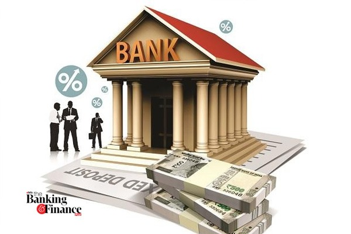

Sparks Bank is the place where customers feel the sense of safety for their property. In the bank, where customers can send the money in easy way. Transaction of money is main part where customer takes shelter of the bank. Now to keep the belief and trust of customers, there is the positive need for management of the bank, which can handle all this with comfort and ease. Smooth and efficient management affects the satisfaction of the customers indirectly. And the main use of Virtual currency is a type of unregulated digital currency that is only available in electronic form. It is stored and transacted only through designated software, mobile or computer applications, or through dedicated digital wallets, and the transactions occur over the internet through secure, dedicated networks.
